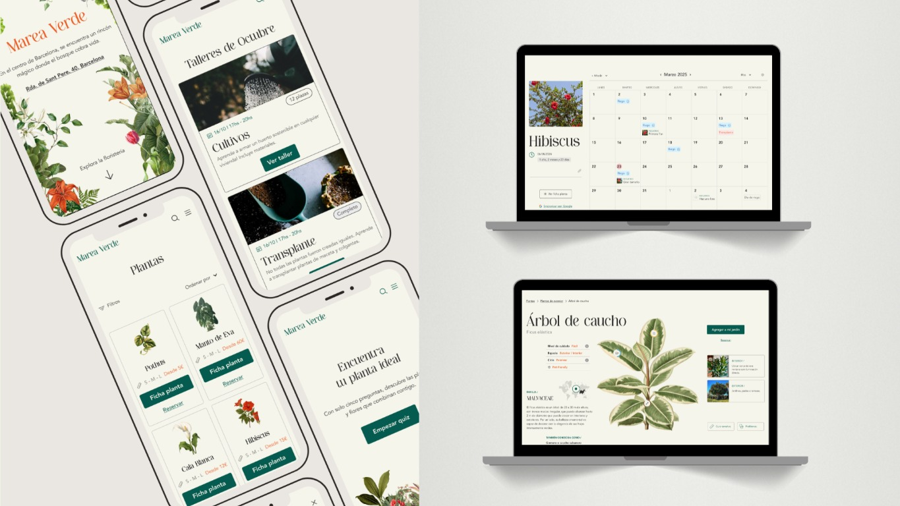
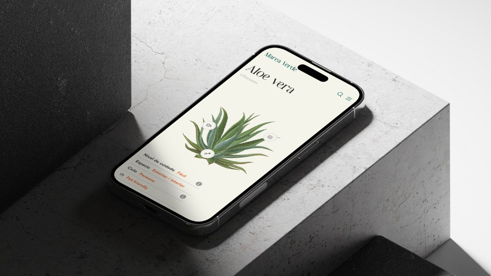
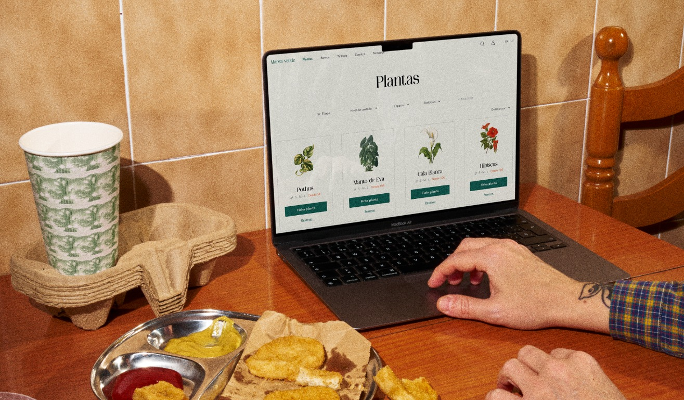
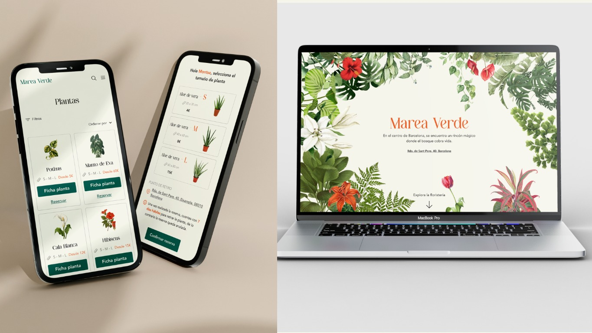
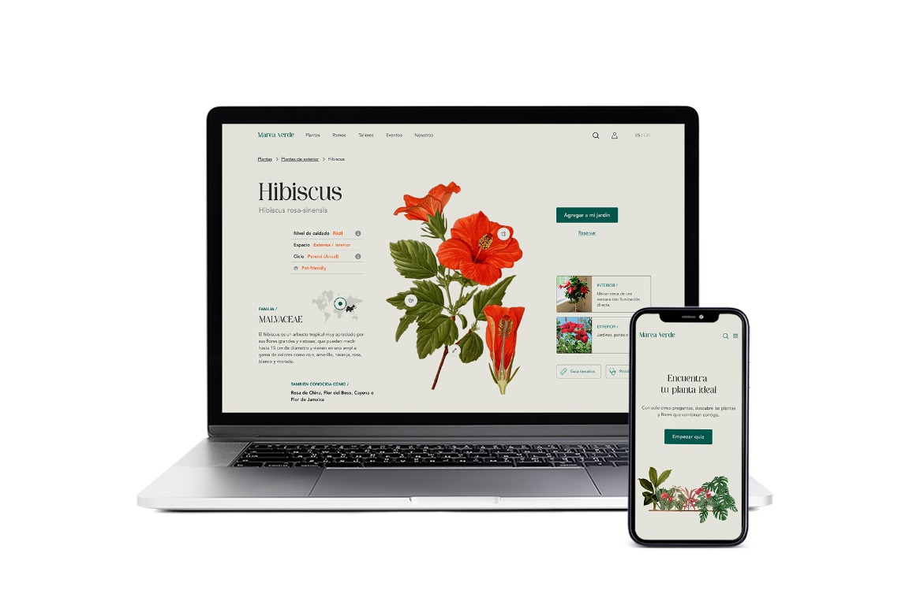

Shopping in person is sensory, not just transactional
People connect with plants directly — the visual appeal, the smell, choosing by feel. That process is meaningful and enjoyable in itself, beyond the purchase.
Ecommerce · Digital platform
A digital platform for Marea Verde that supports the full plant-buying journey — before and after purchase — for plants, bouquets and related products, matched to each customer's botanical questions and care needs.

The brief was to build a digital platform for Marea Verde that goes beyond the transaction — supporting the pre- and post-purchase process for plants, bouquets and related services, while growing users' botanical knowledge and curiosity. Guidance, personalization and accessible content were used to make the experience easier to understand and more supportive.
The harder design problem was translating something people already love about buying plants in person — the sensory, visual and olfactory experience of choosing directly — into a digital context that still feels personal and supportive rather than transactional.





People want reliable information about the plants they already own, or are thinking about buying — but the amount of fragmented information online can make the decision feel more difficult. On top of that, there was no easy way for someone to track the plants they already had, or save ideas for a future purchase.
Looked at four angles across the category:
How platforms surface care guides, articles and multimedia content like videos or infographics.
Tools like watering calendars, plant identifiers and personalized reminders.
Menu structure, label clarity, content hierarchy and how easily each guides a user to their goal.
How visual identity and tone of voice carry a brand's value proposition through every interaction.
Ran a mystery-shopper exercise, 30+ online surveys, and 5 in-depth interviews.
Two findings shaped the direction most:
People connect with plants directly — the visual appeal, the smell, choosing by feel. That process is meaningful and enjoyable in itself, beyond the purchase.
Choosing, buying and caring for plants brings calm and well-being — a pause that lets people focus on something simpler and more natural than their routine.
A reusable component library covering the catalogue, plant detail and plant care, built once for desktop and mobile.
One consistent flow from discovering a plant to caring for it after purchase.
Designed around the complete journey, so the plant you buy connects to the care guidance that follows.